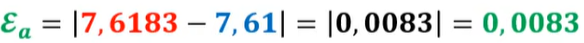
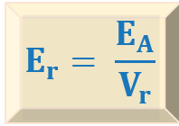
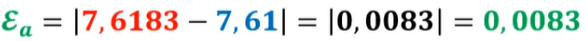
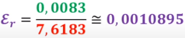
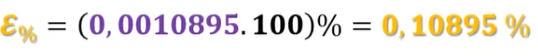

Ya estamos casi llegando a nuestro puerto de destino. Pero, ¿siempre es necesario llegar con exactitud al lugar acordado o es suficiente con que estemos lo suficientemente cerca? Está claro que dependerá del caso en el que nos encontremos.
Ya estamos casi llegando a nuestro puerto de destino. Pero, ¿siempre es necesario llegar con exactitud al lugar acordado o es suficiente con que estemos lo suficientemente cerca? Está claro que dependerá del caso en el que nos encontremos.
En la vida real suelen presentarse situaciones en las que no se puede, o no interesa realizar cálculos con valores exactos, bien porque éstos no se conocen, bien por que la información que ofrece el resultado exacto es irrelevante. En estas situaciones se recurre al cálculo con aproximaciones.
Así, cuando un número tiene muchas cifras, es difícil recordarlo y operar con él. Entonces, lo solemos sustituir por otro más manejable de valor similar, prescindiendo de sus últimas cifras. En la práctica, muchas veces es preferida la expresión decimal aproximada, con una cantidad reducida de cifras decimales, aunque ésta sea imprecisa, porque resulta más fácil captar su valor que expresándolo con radicales. Así, por ejemplo, el número π, en este marco, suele representarse a través de una aproximación: 3,14. Sin embargo, este número irracional es infinito (3,1415926535…). La aproximación permite trabajar con una cifra sencilla de manejar que no está lejos del valor real.
Otras veces, cuando hacemos una medición, el aparato de medida tiene limitaciones en cuanto a la precisión, por lo que la medida real no es posible averiguarla con exactitud y es sustituida por otra aproximada, más sencilla.
En el terreno de las matemáticas:
En el redondeo de números decimales se eliminan todos los decimales posteriores al último decimal significativo y, además, el decimal al que se quiere redondear se aumenta en 1 o se mantiene igual según el caso:
Ejemplo:
Al aproximar por redondeo el número 65,71834
En el truncamiento se reduce el número de decimales eliminando aquellos que son menos significativos. Es decir, el truncamiento consiste en quitar las cifras que están a la derecha de la cifra por la que queremos truncar.
Ejemplo:
Al aproximar por truncamiento el número 65,71834
Así pues, al truncar un número es indiferente si después del último decimal significativo hay un número mayor, igual o menor que 5, porque siempre se deben eliminar todos los decimales posteriores.
Aunque estemos en un contexto en el que no busquemos la exactitud, y nos baste con una aproximación, sí es conveniente que conozcamos el orden de magnitud de la aproximación y que seamos conscientes que al realizar esta aproximación estamos cometiendo un error y que en ciertas ocasiones será interesante cuantificar la magnitud de dicho error.
Por tanto, el error de una aproximación a un número es lo que nos estamos desviando del valor real del número al hacer dicha aproximación. De esto deducimos que una aproximación a un número será mejor cuanto menor sea el error cometido.
Debemos tener siempre en cuenta que, aunque el error que podamos estar cometiendo al aproximar un número pueda no ser significativo, la acumulación de errores al realizar los cálculos con ese número y otros números aproximados, puede hacer que el error cometido en el resultado final de dichas operaciones sí pueda ser significativo y se aleje del verdadero resultado un valor que no nos podemos permitir.
Para cuantificar esos errores se emplean las siguientes medidas:
Se define el error absoluto como la diferencia, en valor absoluto, entre el valor real y el valor aproximado.
Se mide en las mismas unidades que la magnitud que se aproxima, y no debe expresarse con demasiadas cifras significativas.
Ejemplo:

Para decidir si una aproximación es buena se utiliza el error relativo.
El error relativo es el cociente entre el error absoluto y el valor exacto.

Este valor no tiene unidades, y puede expresarse también en porcentaje multiplicándolo por 100 (error relativo porcentual)
Ejemplo:



Cuando no conocemos el valor real de un número y sólo conocemos el valor aproximado para valorar si la aproximación es lo suficientemente buena usamos las cotas de error. Estas cotas de error nos indican cuánto nos podemos equivocar cómo máximo al utilizar una aproximación.
Utilizaremos dos tipos de cotas de error:
> Cota de error absoluto: es un número k tal que Ea < k
Ejemplo: Si aproximamos π a las milésimas tenemos que π = 3.141 y en este caso la cota de error absoluto sería k = 0.001 por lo que Ea < 0.001
Ejemplo: En el ejemplo anterior al hacer π = 3.142 (aproximación por redondeo), la cota de error absoluto sería k = 0.0005 por lo que Ea < 0.0005
> Cota de error relativo: es un número k' tal que Er < k'
Ejemplo: En el segundo ejemplo usado antes, k' = \(\frac{0.0005}{3.142}\) = 1.59·10-4 por lo que Er < 1.59·10-4
Vamos a practicar el redondeo y truncamiento con la siguiente actividad. En esta ocasión introduciremos los decimales utilizando el punto "."
https://www.geogebra.org/m/dwPjEND6 (Ventana nueva)
Instrucciones:
Obra publicada con Licencia Creative Commons Reconocimiento No comercial Compartir igual 4.0